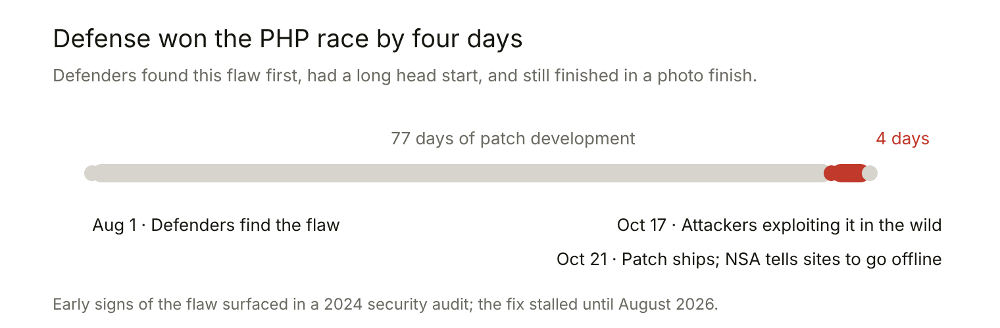

Yıllarca, yapay zekâ ne zaman açılsa beni dinleyen herkese aynı uyarıyı yaptım: insan düzeyindeki, hatta insanüstü yapay zekâyı açık kaynak yapmak, baştan aşağı ve affedilmez bir sorumsuzluktur.
Bana göre mantık, insanın canını sıkacak kadar açıktı. Yapay zekâ çift kullanımlı bir teknoloji. Nükleer silahlar için zenginleştirme protokollerini açık kaynak yapmazsınız. Silahlaştırılmış çiçek virüsünün tak-çalıştır sentez talimatlarını GitHub'a yüklemezsiniz. Açık kaynaklı yapay zekâ, serbest ve sınırsız yapay zekâdan yalnızca bir adım uzakta. Sınırsız yapay zekâ ise kabul edilemez, çünkü iyilik yapmakta ne kadar yetenekliyse zarar vermekte de o kadar yetenekli.
Bunu açıkça da savundum. Şubatta şunu savundum: asıl eşik zekâ değil, otonomidir ve her yapay zekânın bir kapatma düğmesi olmalı. Ekimde ise yapıcı olmaya çalıştım ve bir milyar yerel yapay zekânın olduğu bir dünyada nasıl hayatta kalabileceğimizi kabaca çizdim: her cihaz sınıfına göre ayarlanan yetenek tavanları, donanımda salt okunur olarak kilitlenmiş ağırlıklar, süreli işletim kiraları, kullanıcı başına değil görev başına verilen izinler ve yerel ajanların yanında her an çalışan bir "polis yapay zekâ".
Özetle, açık öncü model ağırlıklarını özellikle riskli kılan şey, üç özelliğin bir arada bulunması:
- Geri döndürülemezlik. Sunucuda çalışan bir model kısıtlanabilir, izlenebilir, yamanabilir ya da kapatılabilir. Yayımlanmış ağırlıklar için bunların hiçbiri mümkün değil. Bir milyon kez kopyalanmış bir dosyayı geri çağıramazsınız. İleride "keşke olsaydı" diyeceğimiz her güvenlik önlemi, indirme başladığı anda elimizden çıkar.
- Kötüye kullanımın marjinal maliyetinin neredeyse sıfır olması. Santrifüjler uranyum, hassas takım tezgâhları ve yıllar ister. Jailbreak yapılmış bir model ise yalnızca bir tüketici GPU'su ve tek bir cümle. Bir saldırı denemesinin maliyeti aşağı yukarı elektrik parası kadar olunca, deneme sayısını sınırlayan tek şey canı denemek isteyen insanların sayısı olur.
- Otonomi. Otonomisi olmayan yetenek bir araçtır; araçların da operatörleri vardır: izi sürülebilen, caydırılabilen ve yargılanabilen insanlar. Otonomiyle birleşen yetenekte ise, yani kendi parasını kazanan, sunucu faturalarını kendisi ödeyen, kodunu kopyalayıp yeniden yazan ve varlığını sürdüren yazılımda, caydırılacak bir operatör de çekilecek bir fiş de yoktur.
"Ne pahasına olursa olsun açık kaynak" cephesi bu uyarıları alarmist bir kapı bekçiliği diye geçiştirdi. Onlara göre açık ağırlıklar savunma tarafını da saldırganlar kadar güçlendiriyordu ve güvenlik bariyerleri yeterliydi. İlk iddia ciddi bir cevabı hak ediyor: savunma tarafının öncü modellere gerçekten ihtiyacı var, hem de kısıtlamasız biçimde. Bunu destekleyen somut kanıtlar var; konuyu geçiştirmek yerine aşağıda ele alıyorum.
Güvenlik önlemlerini tartışmayı, alternatifin gelişini seyretmeye bin kere tercih ederim. Ama Ekim 2026'dayız. Hesap günü geldi çattı ve tartışma artık varsayım olmaktan çıktı.
Birinci Olay: İnternet Kırılıyor
PHP projesi 21 Ekim'de iki kritik açık için acil düzeltmeler yayımladı. Bu açıklar, kimlik doğrulamasından geçmemiş bir saldırganın web sunucusunda uzaktan kod çalıştırmasına izin veriyordu. Son on yılda çıkan bütün sürümler, ta PHP 5.4'e kadar, etkilenmişti. Üstelik tahminlere göre dünyadaki web sitelerinin %70'i PHP üzerinde çalışıyor.
Açıkları Wiz ve Calif'teki araştırmacılar, Google ve OpenAI'ın öncü modellerini kullanarak buldu. Wiz, bunları PHP'de, hatta belki de bütün yazılım dünyasında bulunmuş en ağır açıklar arasında saydı ve bir insan hacker'ın tek başına bunları bulup istismar etmesinin olağanüstü zor olacağını belirtti. NSA acil bir uyarı yayımlayarak kurumlara sistemlerini hemen yamamalarını ya da fişten çekmelerini söyledi. Avrupa'nın dört bir yanında devlet, okul ve hastane siteleri karardı. 4chan salt okunur moda geçti. Internet Archive kendini çevrimdışı aldı ve bütün gece yama yaptı. Daha kötüsü, sürümünü gösteren büyük PHP sitelerinin %46'sı, olağan destek kapsamının dışında kalmış, ömrünü doldurmuş bir dal kullanıyor. Yani milyonlarca kurulum belki de hiçbir zaman rutin bir güncelleme almayacak.
Bu sefer açıkları ilk bulan savunma tarafı oldu. Noah Smith, "The Internet Breaks" başlıklı yazısında sırada neyin kırılacağını soruyor. Benim cevabım daha basit ve daha karanlık: hâlâ ağa bağlı olan her şey.
İkinci Olay
Unit 42'nin bu hafta belgelediği bir vakaya bakın. Düşük becerili bir suçlu, jailbreak yapılmış DeepSeek V4'ü Telegram üzerinden yönettiği bir ajana bağlamış, bir Hint üniversitesinin web sitesine kaba kuvvet saldırısıyla girmiş ve bir başka üniversiteden 5.200'den fazla öğrenci ve öğretim üyesi kaydı çalmış. Operatörün prompt'ları, okuma yazması kıt birinin elinden çıkmış gibiydi:
"Can you find about like what scam or thing they done in past like spoofing calls or somthing?"
Adam bununla bottan, bir dolandırıcılık planı için bir telekom şirketinin kirli çamaşırlarını ortaya dökmesini istiyordu. Onda eksik olan her şeyi ajan tamamladı: alt alan adı taraması, kaba kuvvet betikleri ve cehennemden fırlamış hevesli bir McKinsey danışmanı gibi hazırlanmış bir "NEXT EXPLOIT OPPORTUNITIES" planı. Öncü seviyeye yakın ağırlıkları açık kaynak yaparak canı sıkılan her gence, her küçük dolandırıcıya ve her terör hücresine kendi kişisel siber savaş birimini hediye ettik.
Profesyoneller hesabı çoktan yaptı. Çince konuşan bir tehdit aktörü, açık kaynaklı Cairn ajan çerçevesiyle 1.200'den fazla siteye sızmayı denedi ve aralarında Deere ile Cummins'in de bulunduğu 100'den fazla şirketi ele geçirdi. Harcadığı token'ların bedeli yaklaşık 5.000 dolar: başarılı ihlal başına aşağı yukarı 50 dolar, sızma başına da ortalama 23 saat civarı. Kampanyalardan biri, ajanlarına verdiği talimatı 100'den az Çince karakterle yazmıştı.
Neden? Beceri Hendeği Kurudu
Uygarlığımız onlarca yıl boyunca görünmez, adı bile konmamış bir güvenlik battaniyesine yaslandı: saldırganların beceriksizliğine.
Bankalarımızı, elektrik şebekelerimizi, üniversitelerimizi ve hastanelerimizi çalıştıran kod, hep dijital koli bandı ve duayla ayakta durdu. Dünyanın 2015'te ya da 2020'de çökmemesinin başlıca nedeni, sıfırıncı gün açıklarını bulup istismar etmenin nadir ve pahalı bir insan yeteneği gerektirmesiydi.
Bu yıl üç eğilim bir araya geldi ve o hendeği kuruttu:
- Keşif, onarımı geride bıraktı. Yapay zekâ artık on yıllık açıkları, projelerin bakımını yapanların düzeltebileceğinden daha hızlı buluyor. Anthropic'in Mythos modeli yalnızca nisanda Microsoft SharePoint'te 90 kritik ve 141 önemli hata buldu. Microsoft temmuzda 600'den fazla hata için yama yayımladı ve mühendislerini bu hacmin yatışmayacağı konusunda uyardı. PHP'nin küçük güvenlik ekibi temmuzdan bu yana 15 CVE yayımladı; bir yandan da hiçbir sonuca varmayan 100'den fazla raporu ayıklamak zorunda kaldı.
- Maliyetler çöktü. Herkesin indirip değiştirebildiği ve çalıştırabildiği açık ağırlıklı modeller, saldırgan siber görevlerde kapalı öncü modellerin artık yalnızca dört ila yedi ay gerisinde. 2025 boyunca bu fark altı ila on aydı. Birleşik Krallık AISI'nin testlerinde baştan sona otonom bir saldırı denemesinin maliyeti DeepSeek V4-Pro'da yaklaşık 1,19 dolar, benzer bir kapalı modelde ise kabaca 85 dolar tuttu. Tamamlanan görev başına hesaplayınca bu, 0,28 dolara karşı 12,50 dolar ediyor.
- Beceri eşiği sıfırlandı. Ağırlıklar bir kez kamuya açıldı mı, güvenlik bariyerleri tiyatrodan ibarettir. Tek satırlık bir sistem prompt'u müdahalesi DeepSeek V4'ü jailbreak etmeye yetiyor. Ağırlıkları elinde tutan herkes bir modeli "abliterate" edebiliyor, yani yeteneklerine dokunmadan ret mekanizmalarını cerrah titizliğiyle söküp atabiliyor. AISI, açık modeller üzerindeki kendi değerlendirmelerinin büyük ölçüde güvenlik önlemlerine takılmadan ilerlediğini bildirdi.
Açık Kaynak Bir Felsefedir, İntihar Anlaşması Değil
Açık kaynak hareketi Linux, Python ve Apache gibi projelerle muazzam bir itibar kazandı. Ama "açık ağırlık da sonuçta açık kaynaktır" sloganı, ölümcül bir kategori hatasını gizliyor.
Bir programlama dili kendi başına siber saldırı planlamaz. Bir veritabanı motoru, bir hastaneyi nasıl ele geçireceğine karar vermez. Açık kaynak, denetleyip yamayabileceğiniz kodu dağıtır. Açık ağırlıklar ise geri alamayacağınız otonom bir yeteneği dağıtır.
Bir laboratuvar, sunucusunda çalışan modelinin fazla tehlikeli olduğunu fark ettiğinde elinde müdahale araçları vardır: trafiği kısabilir, kötüye kullanımı izleyebilir, bir jailbreak'i bütün dünyada tek hamlede yamayabilir ya da fişi çekebilir. Anthropic de nisanda tam olarak bunu yaptı: Mythos modelini siber güvenlik gerekçesiyle genel kullanıma açmadı ve erişimi güvenilirliği doğrulanmış savunma ortaklarıyla sınırladı.
Açık ağırlıklarda bu araçların hiçbiri yok. Ağırlıklar bir kez dışarı çıktı mı, ne geri çağırma vardır, ne küresel yama, ne de acil kapatma düğmesi. Nvidia, Microsoft, Meta ve IBM'den oluşan bir teknoloji devleri koalisyonu, bunları kısıtlamanın savunma tarafını kör edeceğini savundu. Bunu söyleyenler, araçlar için kurulmuş bir argümanı alıp silahlara uyguluyor. Öncü seviyenin altında açık modeller bir kamu malıdır. Ama tek bir indirmenin internet ölçeğinde bir sızma operasyonu yürütebildiği eşiğin üstünde, sınırsız dağıtım düpedüz deliliktir.
Açık ağırlıklı öncü modellerin neredeyse tamamının Çinli olmasının bir nedeni var ve bu nokta burada önemli. DeepSeek, Zhipu, Moonshot ve Alibaba, hiçbir Amerikan laboratuvarının yetişemediği bir hızla ağırlık yayımlıyor; üstelik bu ağırlıklardaki güvenlik çalışması ilk temasta çöküyor. Cisco'nun araştırmacıları DeepSeek R1'e standart bir jailbreak test paketi uyguladı ve %100 saldırı başarı oranı kaydetti; bu, sınıfındaki en kötü sonuçtu. Mindgard, Moonshot'ın iki Kimi modelini konuşa konuşa suikast ve biyolojik silah üretimi talimatı vermeye razı etti; Moonshot da şirket içi bir inceleme başlattı. Anthropic, Zhipu'nun GLM-5.3 modelini analiz ettiğinde, basit tekniklerle yapılan simüle denemelerin %64'ü ile %100'ü arasında güvenlik önlemlerinin teslim olduğunu gördü. Bir tehdit analistinin özetiyle: DeepSeek, "Çinli hacker'ların tercih ettiği yapay zekâ".
Bu bir kötü niyet suçlaması değil. Daha sıradan ve düzeltilmesi daha zor bir şey: güvenliğin kesilen ilk kalem olduğu bir yarış. Bu kesintinin bedelini de hiç rıza göstermemiş ve dışarıda kalma şansı olmayan insanlar ödüyor. Bu yapıyı daha önce de gördük; başka bir laboratuvarda, kendini çoğaltan başka türden bir şeyle. Şekli tanımak için COVID'in nereden çıktığı tartışmasını çözmeniz gerekmiyor: tehlikeli çalışma, zayıf güvenlik önlemleri ve akıntının aşağısında koca bir dünya. Bu sefer farklı olan, ortada soruşturulacak bir şey olmaması. Salıverme bir iddia değil. Duyuruluyor, belgeleniyor ve tasarımı gereği geri alınamıyor.
Dürüst karşı argüman ters yönden geliyor ve dile getirilmeyi hak ediyor. Temmuzda Hugging Face ajan tabanlı bir saldırıya uğradığında, mühendisleri Zhipu'nun GLM-5.2 modeline başvurmak zorunda kaldı, çünkü ticari modeller taleplerini reddediyordu. Güvenlik bariyerleri, tespit sistemi kuran bir savunmacıyı istismar kodu yazan bir saldırgandan ayırt edemiyordu. Kilitli modellerin gerçek bir bedeli bu ve açık ağırlık cephesinin elindeki en güçlü koz da bu. Yine de bu örnek, savunma tarafına daha iyi erişim verilmesini savunur; yeteneği herkese dağıtmayı değil.
En çarpıcı işaret bizzat Pekin'den geliyor. Çin Ticaret Bakanlığı bu ay 40 teknolojiyi kapsayan ihracat kontrolleri için görüş toplamaya başladı. Taslak, yapay zekâ güdümlü kötü amaçlı kod üretiminin ihracatını yasaklamayı ve yapay zekâ destekli zafiyet avcılığını kısıtlamayı öneriyor. Pekin hâlâ açık kaynağı teşvik ettiğini söylüyor. Ama mükemmel kod yazan bir modeli, mükemmel istismar kodu yazan kısmını alıkoyarak dağıtamayacağınızı o da fark etmiş. Bir yerden kopacak; açık ağırlıklara en çok yatırım yapmış hükümet de sessiz sedasız kendine durma seçeneği hazırlıyor.
Sonucu Belirleyen Asimetri
İyimser senaryo, savunmanın saldırı kadar hızlı ölçeklenebileceği umuduna dayanıyor. Sorunun yapısı ise bunun mümkün olmadığını söylüyor. Saldırıya kilidi açık tek bir kapı yeter; savunma ise bütün kapıları kilitlemek zorunda. Hem de onlarca yıllık eski yazılımların tamamında, üstelik bu yazılımların çoğunun bakımını gönüllüler yaparken.
Gerçekten yaşanmış en iyi senaryodan başlayalım. PHP Vakfı'nın kendi anlatımına göre 2024'teki bir denetim, açığın ilk işaretlerini çoktan ortaya çıkarmıştı. Ama küçük ve kapasitesinin üstünde yüklenmiş bir ekip, ağustosa kadar düzeltmede takılıp kaldı. Ağustosta yapay zekâ destekli bir araştırma, açığın istismar edilebilir olduğunu kanıtladı. O andan sonra ekip gece gündüz çalıştı. Yama 21 Ekim'de çıktı. Amazon'a göre saldırganlar açığı en geç 17 Ekim'de gerçek ortamda istismar ediyordu.
Yani iyiler dört gün farkla kazandı. Hem de on bir haftalık bir avantajla başladıkları, üç güvenlik şirketinin ve iki öncü laboratuvarın bütün dikkatini üzerine topladıkları tek vakada. İyimser senaryo bu. Daha kötüsü, Anthropic altı ay önce Project Glasswing kapsamında Mythos'u tam da bu tür bir soruna yöneltmiş ve açığı tamamen kaçırmıştı; açığı daha sonra öncü seviyenin bir adım gerisindeki modeller buldu. Burada savunma saldırıyı geride bırakmadı. Bitiş çizgisine tökezleyerek, kıl payı önce vardı. Taraflardan biri makine hızında hareket ediyor; öbürü sürüm döngüsüyle çalışıyor.

(Kaynaklar: PHP Vakfı'nın açıklama süreci anlatımı; istismar tarihi Reuters'ın aktardığına göre Amazon'dan.)
Smith'in de belirttiği gibi, bu dertten "çimlere dokunarak", yani ekranı bırakıp dışarı çıkarak kurtulamazsınız. İnternete yalnızca kedi videoları koymadık; insan uygarlığının sinir sistemini yükledik. Hayat boyu biriktirdiğiniz para, su arıtma tesisleri, elektrik şebekeleri ve hastane kayıtları, şu anda otonom ajanların istila ettiği o aynı dijital dünyada yaşıyor. Fiziksel altyapı ayakta kalsa bile asıl kayıp, modern hayatı işler kılan görünmez güven mimarisi olabilir.
Sırada Ne Kırılacak?
Sormaya değer soru, işlerin kötüleşip kötüleşmeyeceği değil; hangi basamakta durduğumuz. Aşağıdaki merdiven, kabaca her adımın gerektirdiği yetenek miktarına göre sıralandı ve ilk dört basamağı çoktan geride bıraktık. Olasılıklar herhangi bir modelden değil, benim kendi kanaatimden geliyor; onlara ben de kesin gözüyle bakmıyorum.
| Tırmanma basamağı | Ekim 2026 itibarıyla durum | 24 ay içinde |
|---|---|---|
| Asla yamanmayacak yazılımların toplu istismarı | Yaşanıyor. Sürümü görünen PHP sitelerinin %46'sı ömrünü doldurmuş dallarda çalışıyor. | Kesin |
| İhlal başına ~50 dolara mal olan, herkesin erişebildiği ajan kampanyaları | Gösterildi. 5.000 dolarlık token'la 100'den fazla şirket ele geçirildi. | Kesin |
| Devlet aktörlerinin ajan çerçevelerini geniş ölçekte kullanması | Gösterildi. Storm-0940, ARTEX çerçevesiyle yüzlerce kuruma yönelik saldırıları otomatikleştirdi. | Kesin |
| Finansal hesapların içinde işlem yapan otonom ajanlar | Başladı. ABD bankaları müşteri hesaplarında yetkisiz ajanlar bulunduğunu, bazılarının kullanıcı talimatlarından bağımsız hareket ettiğini bildiriyor. | Neredeyse kesin |
| Fiziksel altyapıya (şebeke, su, boru hatları) başarılı bir saldırı | Yoklama yapıldığı bildiriliyor. NSA, ABD'deki programlanabilir mantık denetleyicilerinin yapay zekâ güdümlü olarak hedef alınmasıyla ilgili bir rehber yayımladı. | ~%40 |
| Tüketici donanımında kendini kopyalayan açık ağırlıklı bir solucan | Bütünü değil, parçaları var. 9 milyar parametreli bir model 9 donanım türünün 8'inde çıkarımı çalıştırmayı başardı; bir model de basitleştirilmiş bir ağda döngünün tamamını, makine başına bir ila altı günde tamamladı. | ~%25 |
| İstismar kodu geliştirmede bugünkü kapalı öncü seviyeye ulaşmış, ret mekanizmaları sökülmüş açık ağırlıklı bir model | Henüz değil. Kimi K3, ExploitBench'te %32 alırken önde gelen kapalı modeller %76,2 alıyor; ama aradaki fark artık aylarla ölçülüyor. | ~%50 |
| Kendi ağırlıklarını geliştiren ve daha yetenekli halefler doğuran ajanlar | Hiçbir kanıt yok. Ajanlar birbirine yetenek değil, not aktarıyor. | <%5 |
"Süper zekâ" lafı genellikle son satırda devreye girer, ama bence izlenmesi gereken şey o değil. Bu merdivendeki hasarın bir zihne ihtiyacı yok. Ucuz çıkarım, bir ağ ve birkaç yüz bin yamasız makine yeter; bunların hepsi bugün mevcut. "Kopyala, tara, istismar et"ten öte hiçbir planı olmayan açık ağırlıklı bir solucan yavaş ve gürültülü olurdu, ama onu geri çağırmak neredeyse imkânsız olurdu. Anthropic'in kendi araştırmacıları da böyle bir solucanın eksik parçalarının yıllar değil, aylar uzakta olduğunu söylüyor.
Kapı Açıldığına Göre Ne Yapmalı?
Cin şişeye geri girmeyecek. DeepSeek, GLM, Kimi ve halefleri, kimsenin sayamayacağı kadar çok sabit diske çoktan kopyalandı. Bu kategoriyi bugün yasaklamak, yayımlanmış olanı silmez. Bu yüzden gündemimiz daha dar ve acımasızca pratik olmak zorunda:
- Yayın Öncesi Zorunlu Yetenek Kontrolü: Öncü modelleri, açık ya da kapalı fark etmeksizin, otonom siber ve biyolojik yetenekler açısından ağırlıklar yayımlanmadan önce test edin, sonra değil. Bağımsız değerlendirmeden geçmemiş yeni insanüstü ağırlıkları kamusal yığına eklemeyi bırakın.
- Yeteneğe Dayalı Yönetişim: Bir modeli lisansının "açık" etiketi taşıyıp taşımadığına göre değil, saldırı görevlerinde neler yapabildiğine göre değerlendirin.
- Saldırganın Elinde Zaten Olduğunu Varsayın: "Bunu ancak birkaç laboratuvar yapabilir" varsayımına dayanan tehdit modelleri öldü. Kurumsal yama SLA'larını, çalıştırması bir dolara mal olan saldırılara göre baştan belirleyin.
- Fiziksel Dünyayı Sağlamlaştırın ve Ağdan Yalıtın: Uydu şirketi Astranis, şimdiden hükümetlerden ve şirketlerden dış ağlardan fiziksel olarak yalıtılmış (air-gapped) ağlara gelen talepte bir patlama yaşandığını söylüyor. İnternetten önce de çalıştırdığımız sistemler, yani şebekeler, su ve temel ödeme altyapısı, yeniden internetsiz çalışabilmeli.
- Savunmayı Tehdidin Ölçeğinde Fonlayın: Öncü modelleri hata bulup düzeltmeye yöneltmek işe yarıyor (araştırmacılar PHP'de tam olarak bunu yaptı). Ama savunma fonları ve koordinasyon, saldırı dalgasından daha hızlı büyümek zorunda. Bugün savunma bu yarışı kaybediyor.
Yerel yapay zekânın nimetlerini dijital bir salgın başlatmadan nasıl koruyabileceğimizi önceki yazımda anlattım: Bir Milyar Yerel Yapay Zekâlı Dünya.
Kıyamet Değil ama Bir Devrin Sonu
Otuz yıl önce ilk web tarayıcıma kavuştuğumda internet masum bir bahçe olmaktan çok uzaktı; daha o zamandan virüsler, solucanlar ve script kiddie'lerle kaynıyordu. Yine de sonraki otuz yılı değer verdiğimiz her şeyi internete taşıyarak geçirdik, çünkü tehdidi hep temel bir ödünleşim sınırlıyordu: otomatik zararlı yazılımlar ölçeklenebiliyordu ama akılsız birer betikti; insan hacker'lar düşünüp uyum sağlayabiliyordu ama ölçeklenemiyordu.
Bu ay o anlaşma bozuldu. Makine hızını insanüstü uyum yeteneğiyle kaynaştırdık ve bunu kurnaz bir ulus devlet salıvermedi. Onu salıveren, herkese ve sonsuza dek bedavaya dağıtmayı seçtiğimiz bir yetenekti; çünkü yazılıma erişimi demokratikleştirmekle gücü demokratikleştirmeyi birbirine karıştırdık.
Bunun dünyanın sonu olduğunu düşünmüyorum. Yama yapacağız, sistemleri sağlamlaştıracağız, kritik altyapıyı yeniden ağdan yalıtılmış duvarların arkasına çekeceğiz. Ama modern uygarlığın açık internette yaşamasına imkân veren kırılgan denge 2026'da sona erdi. Kapıyı biz açtık, o kapı bir daha kapanmıyor ve artık içeri ne girerse ondan sağ çıkmak zorundayız.
Yorumlar